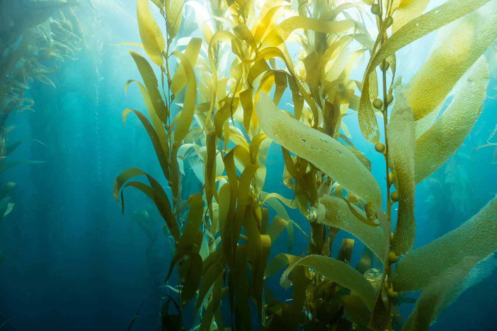

- Habitat
- Usages
- Diet
Seaweed, or macroalgae, refers to thousands of species of macroscopic, multicellular, marine algae. The term includes some types of Rhodophyta (red), Phaeophyta (brown) and Chlorophyta (green) macroalgae. Seaweed species such as kelps provide essential nursery habitat for fisheries and other marine species and thus protect food sources; other species, such as planktonic algae, play a vital role in capturing carbon and producing at least 50% of Earth's oxygen.[3] Natural seaweed ecosystems are sometimes under threat from human activity. For example, mechanical dredging of kelp destroys the resource and dependent fisheries. Other forces also threaten some seaweed ecosystems; for example, a wasting disease in predators of purple urchins has led to an urchin population surge which has destroyed large kelp forest regions off the coast of California. Humans have a long history of cultivating seaweeds for their uses. In recent years, seaweed farming has become a global agricultural practice, providing food, source material for various chemical uses (such as carrageenan), cattle feeds and fertilizers. Due to their importance in marine ecologies and for absorbing carbon dioxide, recent attention has been on cultivating seaweeds as a potential climate change mitigation strategy for biosequestration of carbon dioxide, alongside other benefits like nutrient pollution reduction, increased habitat for coastal aquatic species, and reducing local ocean acidification.[5] The IPCC Special Report on the Ocean and Cryosphere in a Changing Climate recommends "further research attention" as a mitigation tactic.
